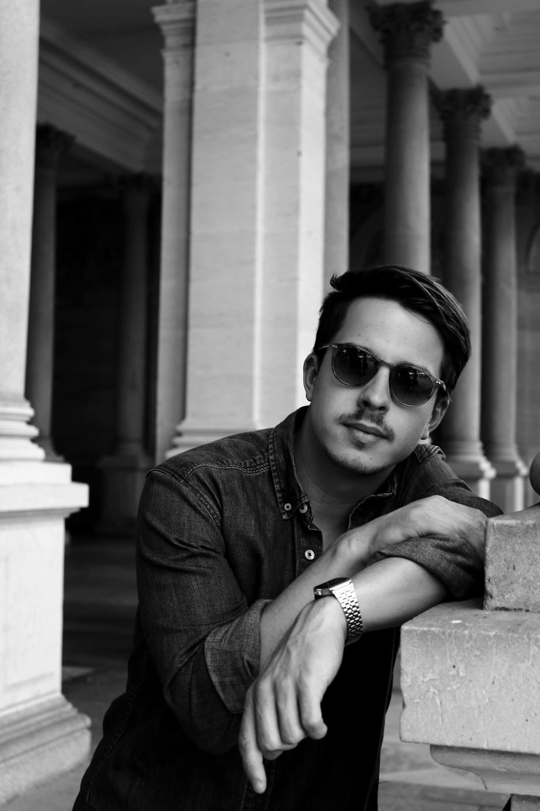

About
Büki Balázs magyar rendező, aki elsősorban zenei videók és reklámok rendezésével foglalkozik. Munkái a Pogány Induló, Azahriah és Dzsúdló zenekarok számára készült videókon keresztül mutatják be egyedi látásmódját és stílusát.
Reklámfilmek során olyan márkákkal dolgozott már, mint a Hell Energy, Coca Cola, Unicum, BAHART, vagy a TV2, ahol munkája során minden esetben egy fiatalos és energikus látásmóddal egészült ki a kollaboráció, annak érdekében, hogy innovatív végeredményt vigyenek piacra.
2025-ben sikerült harmadszor is megnyernie a Magyar Klipszemle fődíját.
Díjai:
Best Music Video at Hungarian Music Video Awards (2022) - Slow Village's "Storytell"
Best music Video at Hungarian Music Video Awards (2024) - Pogány Indulo's "Úgyhiszem"
Best Narrative (Silver) at Berlin Music Video Awards (2025)- Manuel's Orgonabokor
Best Directing (Silver) at Hungarian Music Video Awards (2025) - Pogány Indulo's "Kettő/Kettő"
Best Art Direction at Hungarian Music Video Awards (2025) - Dzsúdló's "Sötét"
Best Music Video at Hungarian Music Video Awards (2025) - Pogány Indulo's Egy/Kettő
Balázs Büki is a Hungarian director who primarily works on music videos and commercials. His work demonstrates his unique vision and style through videos created for the bands Pogány Induló, Azahriah, and Dzsúdló.
During commercial film production, he has worked with brands such as Hell Energy, Coca Cola, Unicum, BAHART, and TV2, where his collaboration has consistently been characterized by a youthful and energetic approach, with the goal of bringing innovative results to market.
In 2025, he successfully won the main prize at the Hungarian Klipszemle (Music Video Festival) for the third time.
Awards:
Best Music Video at Hungarian Music Video Awards (2022) - Slow Village's "Storytell"
Best music Video at Hungarian Music Video Awards (2024) - Pogány Indulo's "Úgyhiszem"
Best Narrative (Silver) at Berlin Music Video Awards (2025)- Manuel's Orgonabokor
Best Directing (Silver) at Hungarian Music Video Awards (2025) - Pogány Indulo's "Kettő/Kettő"
Best Art Direction at Hungarian Music Video Awards (2025) - Dzsúdló's "Sötét"
Best Music Video at Hungarian Music Video Awards (2025) - Pogány Indulo's Egy/Kettő